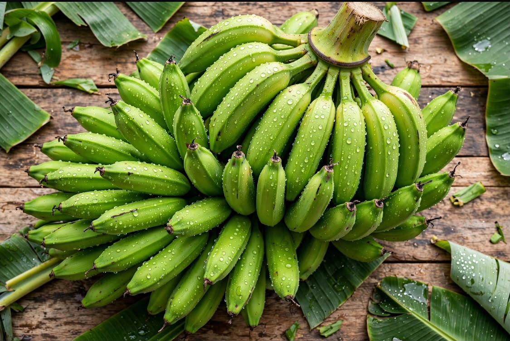
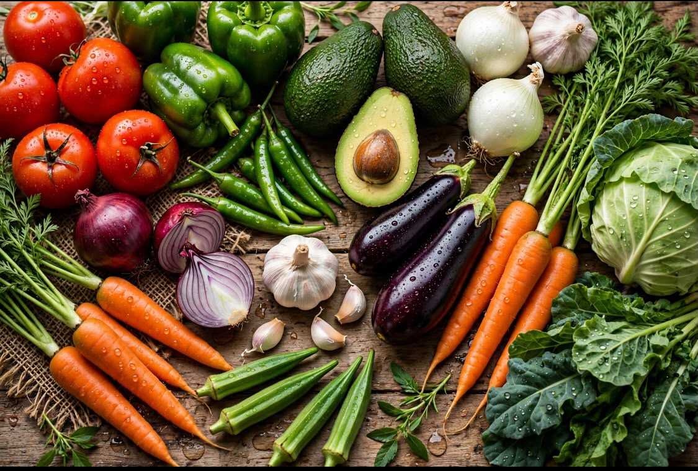
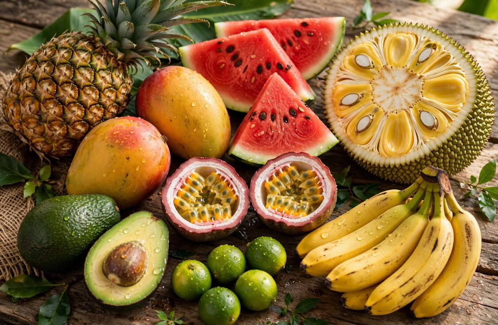
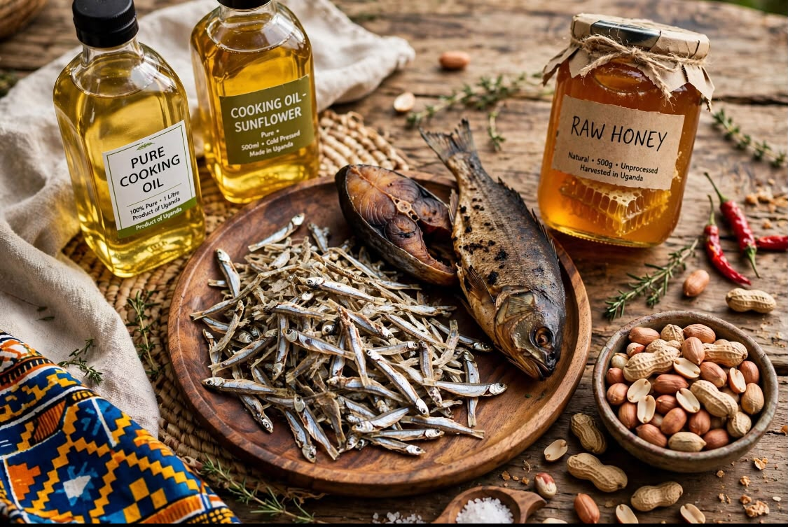
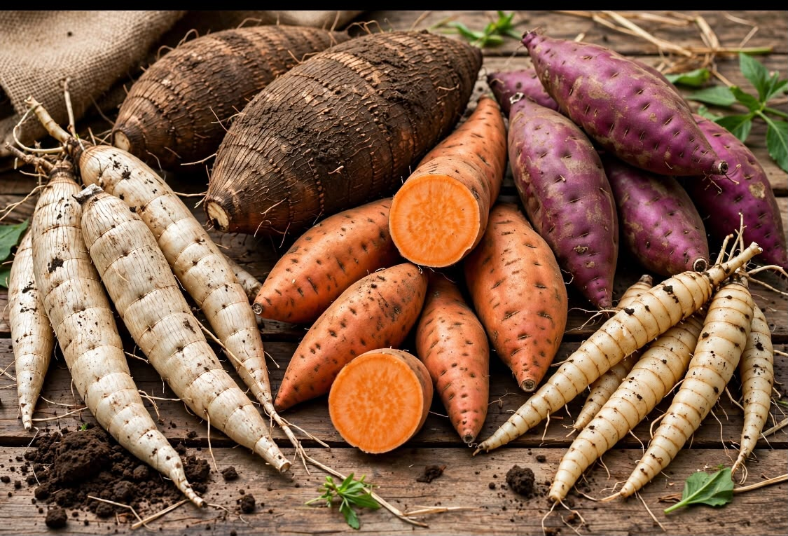
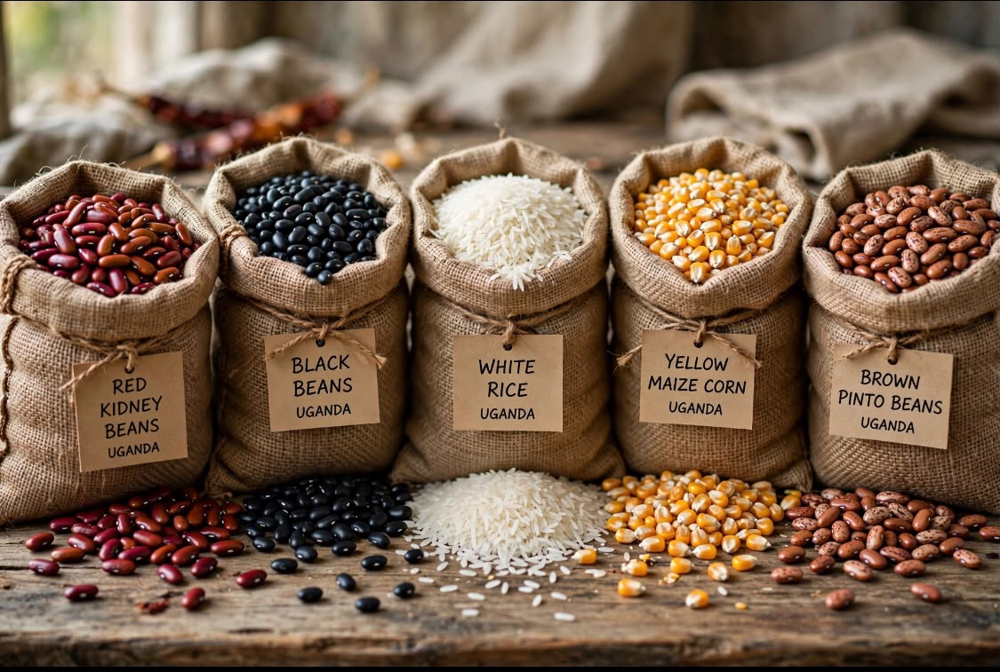

Green Matook Bananas
Fresh green matook bananas, a popular staple food in Uganda and an important agricultural product.
SHABRE
EXPORTSFROM UGANDA TO THE WORLD
Quality agricultural products sourced from Uganda for customers and businesses.
WHAT WE SUPPLY
Shabre Exports, operated by Shelter of Good Hope Agro Enterprises Ltd., supplies a variety of agricultural products from Uganda.
Our products include fresh fruits and vegetables, grains, traditional foods, roots and tubers, as well as other agricultural products.

Fresh green matook bananas, a popular staple food in Uganda and an important agricultural product.

Fresh vegetables sourced from Ugandan agricultural producers for customers and businesses.

Fresh tropical fruits from Uganda, including products such as pineapples and mangoes.

A selection of agricultural and food products including dried fish, oils, honey and peanuts.

Traditional agricultural products including roots and tubers sourced from Uganda.

Quality beans and grains supplied from Uganda's agricultural sector.
NEED MORE INFORMATION?
Contact us to ask about available products, quantities and supply enquiries.
Contact Us